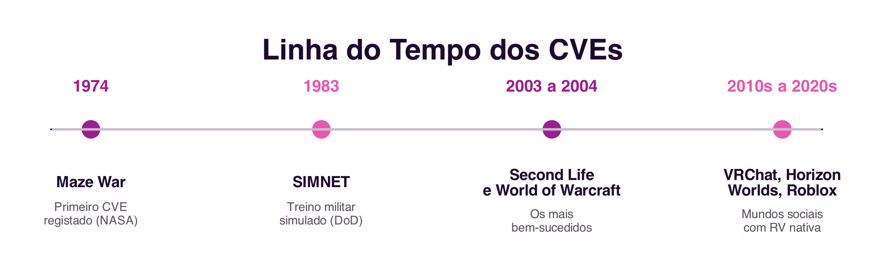
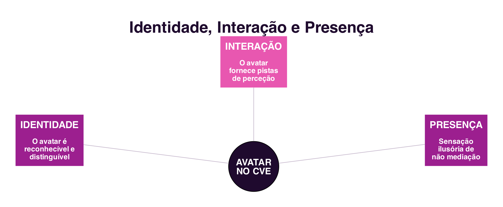

6 Ambientes Virtuais Colaborativos
Ambientes Virtuais Colaborativos
Introdução
Os dois capítulos anteriores trataram da colaboração mediada por texto e por voz, os sistemas de comunicação (Secção 5.1) e os sistemas que apoiam a coordenação e a cooperação (Secção 5.6). Este capítulo explora uma forma diferente de mediar a colaboração: em vez de um canal por onde passam mensagens, o computador passa a simular um mundo partilhado, dentro do qual os participantes se encontram, navegam e interagem. É essa mudança de metáfora, de canal de comunicação para espaço partilhado, que distingue os Ambientes Virtuais Colaborativos.
6.1 O que é um Ambiente Virtual Colaborativo?
Um Ambiente Virtual Colaborativo, ou CVE (Collaborative Virtual Environment), é um sistema de realidade virtual distribuído que simula graficamente, em tempo real, um mundo real ou imaginário, onde utilizadores, representados pelos seus avatares, estão simultaneamente presentes, navegam e interagem com objetos e com outros utilizadores (Raposo 2011).
O conceito de CVE começou a popularizar-se junto com o termo ciberespaço, cunhado por William Gibson no romance Neuromancer (Gibson 1984) e já discutido no Cap.1 (Secção 1.2.2). Embora a origem seja a ficção científica, e a imersão física mostrada em filmes como Matrix e Avatar continue distante da tecnologia real, o conceito popularizado por Gibson influenciou de forma significativa tanto os investigadores como os programadores de sistemas de realidade virtual.
6.2 Elementos de um CVE
Três elementos são comuns a qualquer CVE, independentemente do nome que a literatura lhe dê, Networked Virtual Environment, Metaverse, entre outros (Figura 6.1):
- Mundo virtual: o elemento fundamental de um CVE, um espaço imaginário composto por uma descrição de objetos e pelas regras que os governam. A relação entre a descrição do mundo e a sua execução computacional é comparável à relação entre o guião de uma peça de teatro e a sua encenação em palco, com a diferença de que, num CVE, os utilizadores são também atores.
- Avatares: os objetos virtuais usados para representar cada participante. Cada mundo virtual é diferente, e para atuar nele é preciso incorporar um avatar próprio desse mundo.
- Interatividade: a capacidade de o mundo virtual responder às ações dos utilizadores, seja quando estes navegam e modificam a sua posição, seja quando selecionam e manipulam objetos. É a interatividade que distingue estar num CVE de assistir a um filme de animação.

6.3 Imersão
A soma de uma representação gráfica adequada do mundo virtual com uma boa interatividade contribui para o sentimento de imersão, a sensação de “estar lá” dentro do mundo virtual. Distinguem-se dois tipos de imersão (Raposo 2011):
- Imersão mental: o objetivo dos criadores de conteúdo desde muito antes dos CVEs existirem, o engajamento e o envolvimento do consumidor com esse conteúdo. A imersão mental pode ocorrer, por exemplo, ao ler-se um bom livro, sem qualquer representação física.
- Imersão física: estimula sinteticamente os sentidos, por meio da tecnologia, para fazer crer que o próprio corpo está no mundo virtual. Atualmente, é estimulada principalmente pela representação visual tridimensional (estereoscopia), pelo áudio espacial e por dispositivos de interação que captam os movimentos do utilizador. Os capacetes de realidade virtual atuais, como o
Meta Questou oApple Vision Pro, são a forma mais acessível, hoje, de obter imersão física.
Os CVEs vão além da imersão mental por investirem também na imersão física. Na ficção científica, como nos filmes já referidos, a imersão física é completa, ao ponto de o corpo real do utilizador deixar de ser distinguível do avatar. Na prática, a maioria dos CVEs atuais ainda não possui recursos de estereoscopia, mesmo sendo mundos virtuais em três dimensões: não se deve confundir um CVE 3D, um espaço com três dimensões de navegação, com um “filme em 3D” ou com um dispositivo de realidade virtual estereoscópico, ainda que nada impeça que um CVE seja também estereoscópico.
6.4 Breve História dos CVEs
O primeiro CVE de que há registo, o Maze War, foi criado em 1974 num centro de investigação da NASA: um jogo em que os utilizadores andavam por um labirinto atirando uns nos outros, e que já continha ideias que se tornariam padrão nos CVEs, a navegação em primeira pessoa e a comunicação por mensagens instantâneas. Os esforços mais massivos partiram do Departamento de Defesa dos Estados Unidos: o SIMNET, desenvolvido a partir de 1983, treinava unidades militares em batalhas virtuais simuladas, e deu origem a normas técnicas ainda hoje influentes na simulação distribuída (Figura 6.2).

Entre os CVEs mais influentes da sua época contam-se o Second Life (2003, Linden Lab) e o World of Warcraft (2004, Blizzard). Ambos partilham a definição de CVE, mas têm propósitos muito diferentes: o World of Warcraft é um jogo, com um mundo de fantasia definido pelos seus criadores, enquanto o Second Life é um CVE de “propósito geral”, construído pelos próprios utilizadores, com uma economia virtual própria convertível em moeda real. Mais recentemente, plataformas como o VRChat, o Meta Horizon Worlds e o Roblox retomam esta mesma ideia de mundo social massivo, agora com suporte nativo para dispositivos de realidade virtual.
6.5 Identidade, Interação e Presença
Uma das ideias centrais por trás dos CVEs não é inventar novas metáforas, mas sim reproduzir, no mundo virtual, noções já existentes no mundo real: identidade, localização, presença e o andamento das atividades dos outros participantes (Figura 6.3) (Raposo 2011).

A identidade está relacionada com o avatar do utilizador: espera-se que este seja reconhecível de imediato como um avatar, e distinguível de outros avatares, tal como reconhecemos de imediato outra pessoa e a distinguimos de outras pessoas no mundo real.
A interação entre utilizadores de um CVE depende diretamente da representação do avatar, que fornece as principais informações de perceção sobre os outros participantes, a localização, a orientação e a disponibilidade, num sentido muito próximo ao já discutido a propósito da perceção em sistemas de cooperação (Secção 5.6.2). A movimentação de um avatar antecipa as intenções do utilizador que representa: virar as costas durante uma conversa mostra desinteresse, tal como aproximar-se de outro avatar pode indicar vontade de interagir com ele.
A presença, originalmente chamada de “telepresença”, é “a perceção ilusória de não mediação” (Lombard e Ditton 1997): o utilizador não perceciona um meio durante a sua interação, comportando-se como se esse meio não existisse. Distinguem-se a presença física, a sensação de estar num lugar real ou virtual, e a presença social, a sensação de estar, física ou psicologicamente, com outra pessoa. Num CVE, a presença envolve as duas dimensões: a sensação de estar no mundo virtual (imersão) e, ao mesmo tempo, a sensação de lá estar acompanhado.
6.6 Comunidades Virtuais
Seja qual for o seu propósito, jogo, socialização, educação ou economia, um CVE dá quase sempre origem a uma comunidade virtual, com regras sociais próprias e uma cultura particular. A metáfora espacial dos CVEs promove tanto encontros casuais entre desconhecidos como a colaboração entre conhecidos, de uma forma geralmente mais motivadora do que os sistemas colaborativos desktop discutidos nos capítulos anteriores.
Como em qualquer sociedade, comportamentos inadequados também acontecem nos CVEs: vandalismo, perturbação de outros utilizadores, ou mesmo assédio, ecos, num espaço tridimensional, do flaming, da trollagem e do cyberbullying já discutidos a propósito da comunicação por texto (Secção 5.4, Secção 1.5.3). As empresas responsáveis por estes ambientes precisam de lidar com estes comportamentos tal como qualquer outra plataforma social.
6.7 Síntese
Este capítulo introduziu os Ambientes Virtuais Colaborativos:
- Um CVE simula um mundo partilhado, em vez de servir apenas como canal de comunicação, composto por um mundo virtual, avatares e interatividade (Raposo 2011)
- A imersão pode ser mental (o engajamento com o conteúdo) ou física (a estimulação sintética dos sentidos, hoje sobretudo através de capacetes ou óculos de realidade virtual)
- O primeiro CVE de que há registo foi o
Maze War(1974); oSIMNET- trouxe os primeiros esforços massivos de desenvolvimento; o
Second Lifee oWorld of Warcraftcontinuam, décadas depois, entre os CVEs mais bem-sucedidos
- trouxe os primeiros esforços massivos de desenvolvimento; o
- Os CVEs reproduzem noções do mundo real: identidade (o reconhecimento do avatar), interação (mediada pela perceção que o avatar fornece) e presença (a sensação ilusória de não mediação) (Lombard e Ditton 1997)
- Todo o CVE dá origem a uma comunidade virtual, com regras sociais próprias, onde também podem ocorrer comportamentos inadequados
6.8 Para Refletir
Se já usaste algum ambiente virtual colaborativo, um jogo multijogador, uma reunião em realidade virtual, ou uma plataforma como o Roblox ou o VRChat, pensa no teu avatar: até que ponto ele representa a tua identidade real? O que escolheste mudar, e porquê?
E quanto à presença social: consegues identificar um momento em que te sentiste genuinamente “acompanhado” num espaço virtual, mesmo sabendo que as outras pessoas estavam fisicamente longe?